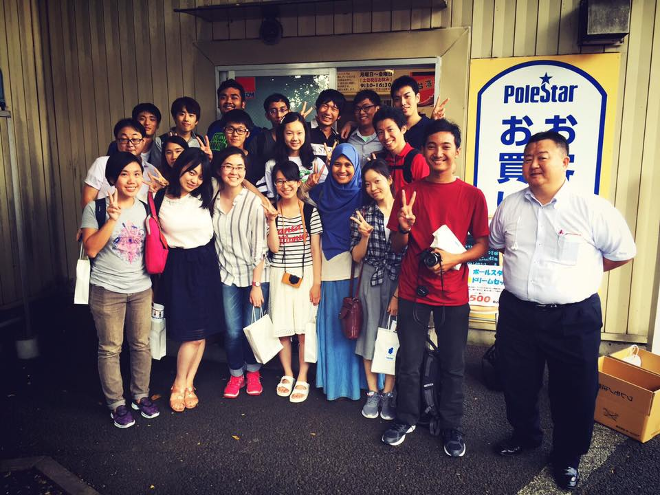
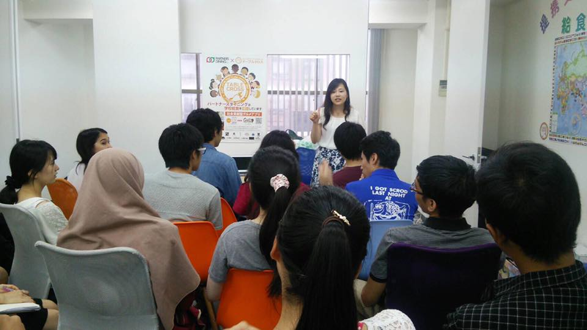

Introduction of JOSI for Foreigners
■What's MIS?
MIS（Multilateral Interaction with Students）is a student-led organization at the University of Tokyo which aims to develop responsible leaders of the next generation. In order to do so, MIS designs environment in which students, despite disparities, get to proactively “debate” with one another to “take action.” MIS offers such an environment as it is essential for students “to broaden their horizons” and consequently, develop “awareness about societal problems and societal responsibility.”
■What's JOSI?
We MIS have a team which works in Japan. The name of the team is, JOSI (Japan Overseas Interaction with Students). We focus on social issues not only in Southeast Asia, but also in Japan. Experience Japan project is trying to find the ways to solve social issues in Japan and has carried out twice.
Last year, we set “what is the importance of food” as the theme of Experience Japan 2016. 9 students came from Indonesia, Malaysia, Myanmar, and Vietnam. Through the project, we obtained the knowledge and the viewpoints about food. By combining them, we considered the essentials of food, discussed contemporary food problems and their solutions.


■About Experience Japan Project in 2017
In 2017, the new theme was determined! We decided to make a project on handicapped persons. The project was named “beyond the border.” We are going to think how we can realize the borderless world.
If you are interested in our project in 2017, please read this information/Information for visually impaired person. And if you want to apply it, please write this application form and send an email attached your form to our email adress (josi@misleaders.org)! In addition, you can also know our project and ask some question to us through our facebook page!
We are looking forward to seeing you!